And What?
How do you symbolize creativity?
How do you represent imagination?
To find something that best represent a company that is geared towards the cultivation of originality requires deep understanding on what it means to create, to be original and to be unique.
What does company stand for?
We need determine how the company wants to be viewed and seen, how it wants to be recognized.
What better way to represent an complex idea than to use something so simple and succinct like an ampersand (&)?
The Designer's Darling
Have you ever wondered where all these ampersand ephemora come from?
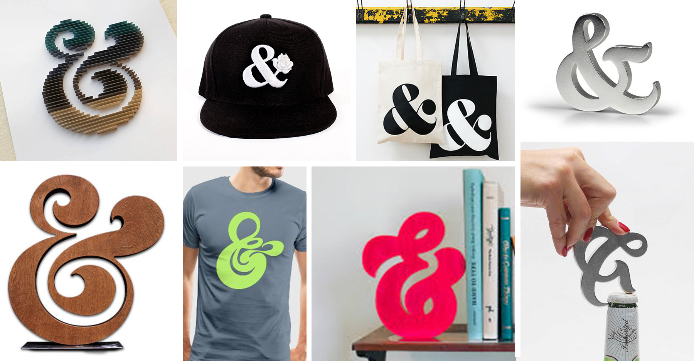
Why of all things to draw, the ampersand has always been the choice of designers?
Ask any creative professional what the most fun glyph to draw and without a doubt say that the ampersand is their favorite.
“usually a tirelessly entertaining one, perhaps an uncle with too many tricks,”
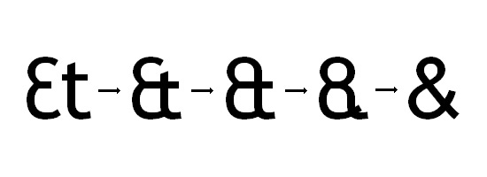
Co. Design Writes:
For type designers and aficionados both, it isn’t so much a character as it is a character, “usually a tirelessly entertaining one, perhaps an uncle with too many tricks,” as Simon Garfield wrote in his 2012 book, Just My Type.
Jonathan Hoefler, Type Designer :
“It’s always an opportunity for adventure,” he says. “Even the most conservative typefaces can give sanctuary to a whimsical ampersand or two.”
The (&) It’s such an expressive letter. It gives designers and creative people alike a perpetual playground to play around with.
The ampersands doesn’t have any particular form instead a basic idea of how it looks (and functions) is mostly implied by the curves and it’s structure.
Which is why the main focus of our mark is this playful and whimsical glyph.
(&) : A History Lesson
Commonly known as “and”, the ampersand got its visual representation from the phrase “and, per se and”.
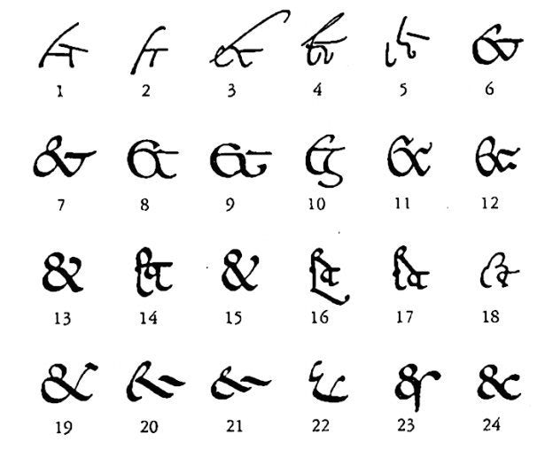The graphical shorthand for “et” in latin or “and” the ampersand connotes creativity, building on the present.
And then?
Wikipedia defines “Yes and…” Thinking as:
Yes, and…” —more commonly referred to as the “Yes, and…” thinking is a rule of thumb in improvisational comedy (improv) which suggests that a participants should accept what another participant has stated and *expand* on that line of thinking.
This line of thinking is also used in business and other organizations to facilitate a more effective brainstorming of ideas and can even foster better communication and a free sharing of ideas.
We define creativity as putting 2 unseemingly dissimilar and far fetched ideas and mashing them into 1 cohesive thought or product.
It’s 1 and 1.
Not 1 orthe other
“And” —is the catalyst.
Papermo & co is a company that thrives on the creativity of their customers, providing the tools and products that inpsire and encourage imagination, it is only befitting that such a company be represented by a mark that is in-line with their vision.
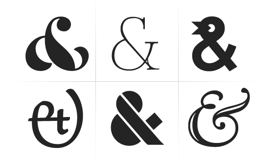
Uniquely Un-unique
Technically, no one can ever claim copyright to the ampersand, which makes it public domain and is open to numerous interpretations.
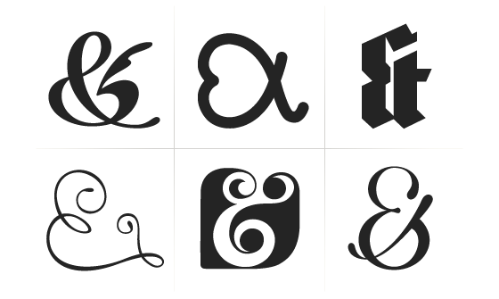
There’s a reason why these top creative agencies use the ampersand as a symbol for their logo mark. It is both easily recognizable yet, easily customizable.
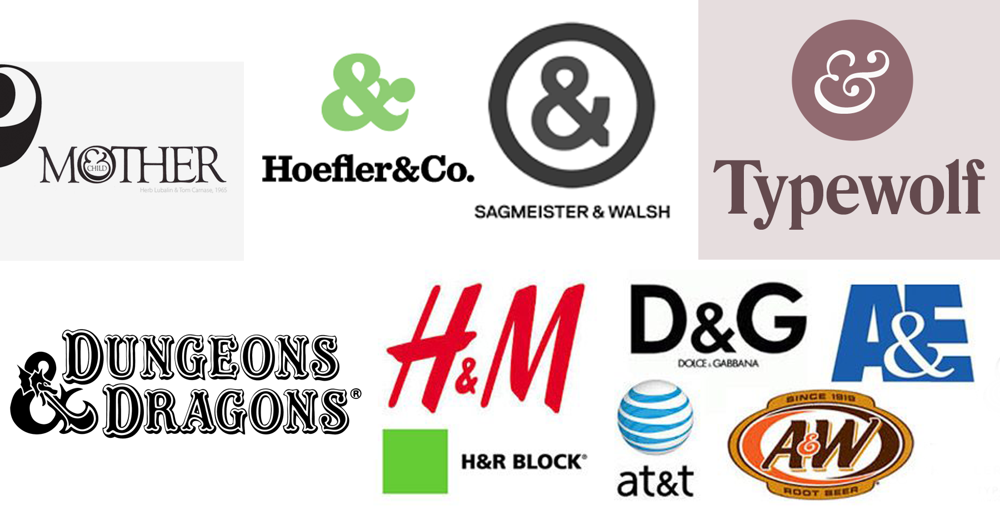
There’s a saying that there’s a hundred ways to skin a cat, well, there’s a hundred ways to draw a ampersand, too.
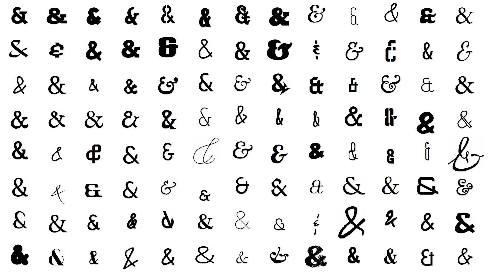
Papermo and Co’s offering, it’s what you do with it that matters. What Papermo and Co is offering is essentially a blank canvas, everyone and anyone can make one, it’s common. It’s paper, but what makes it unique, and what makes it *yours* is what you do with it.
It’s how you can make it yours is that what counts.
Paper Folding
If we stopped with the simple ampersand would have been more than enough to symbolize a company that’s creatively driven.
But we take the idea 1 step further.
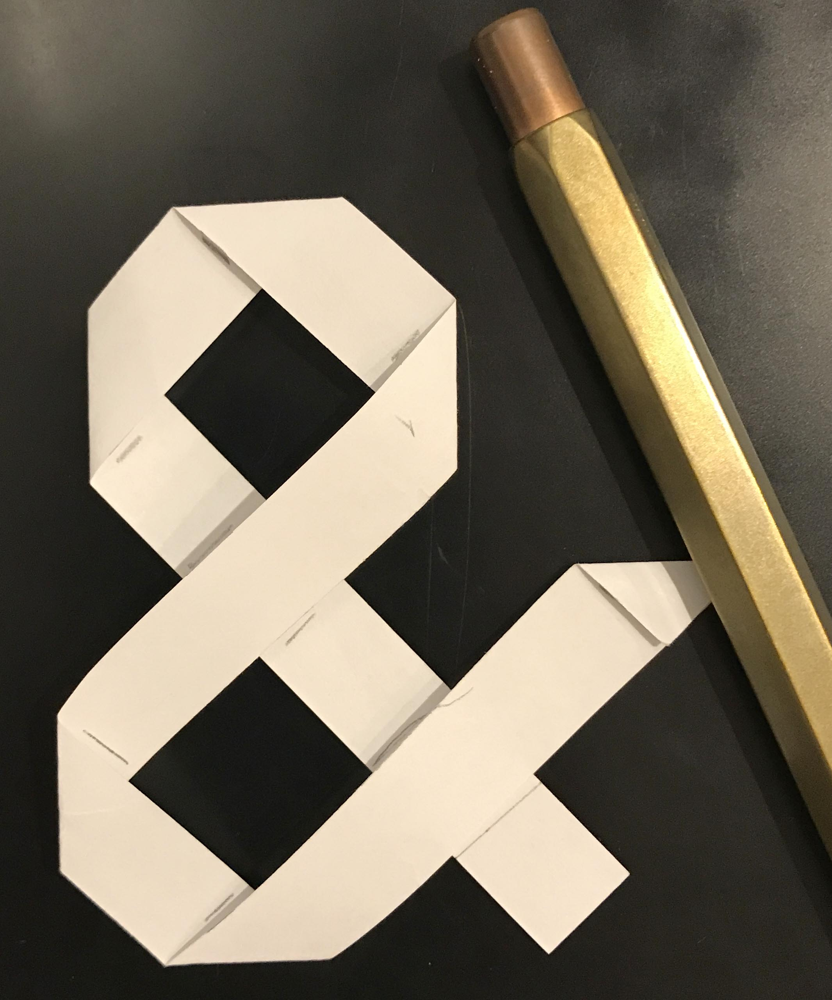
We add another dimension to the mark by constructing it out of a single sheet of paper which is the core of crafting.
Typography
We start with a sheet of paper, and we venture out from there, where it leads us no one knows.
Logo Construction : The Mark and the Box
The juxtaposition of the round and flair of the ampersand contrasts nicely with the rigidity of the square.
A typeface is essentially the company's voice. So choosing the right typeface is essentially selecting the company's voice. Too loud and the company might appear desperate, too soft, and the company might look weak. The right balance of tone and look should be struck.
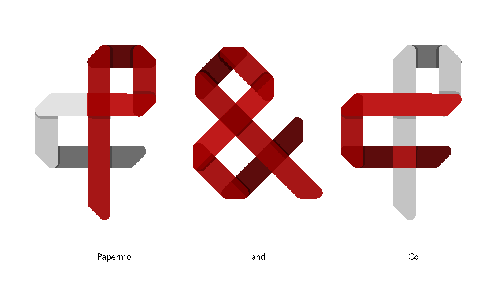
Our mark combines the “P” of Papermo and the “C” of Company melded together as the ever so iconic ampersand.
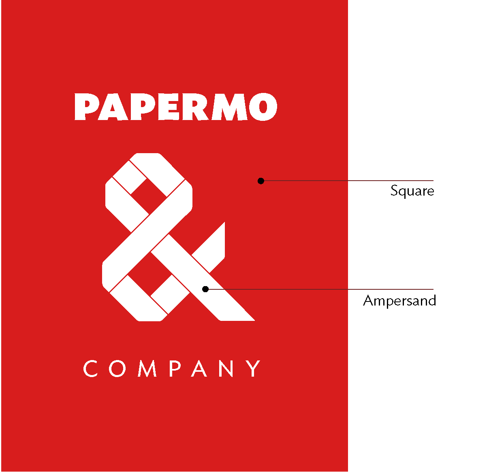
The square reqpresnts the blank canvas and the mechanical side of the business while the ampersand represent the human touch and warmth, make the mark more appealing and approachable.
The Ideal Typeface
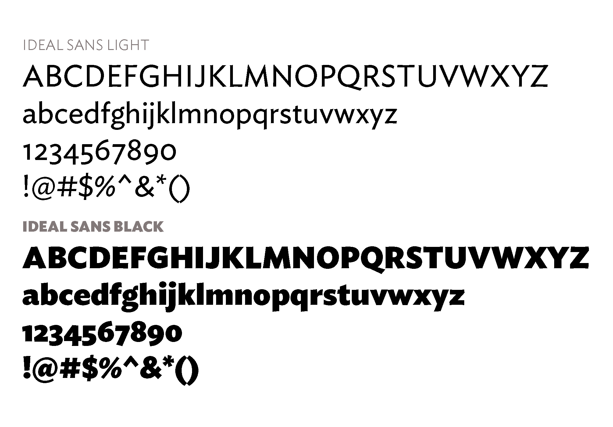
Ideal Sans by Jonathan Hoefler was chosen to be the acoompanying typeface for the mark because it’s a tyepface that has the fludity and warmth of a handmade typeface and while at the same time having the precision and consistency only a machine can do..
Deeply rooted in the classical forms the typeface is a trailblazer as being the first to have humanist qualities.
Ideal Sans is the ideal typeface as it also is a mix of machine precisision melded with humanist warmth.
Logo Presentation:
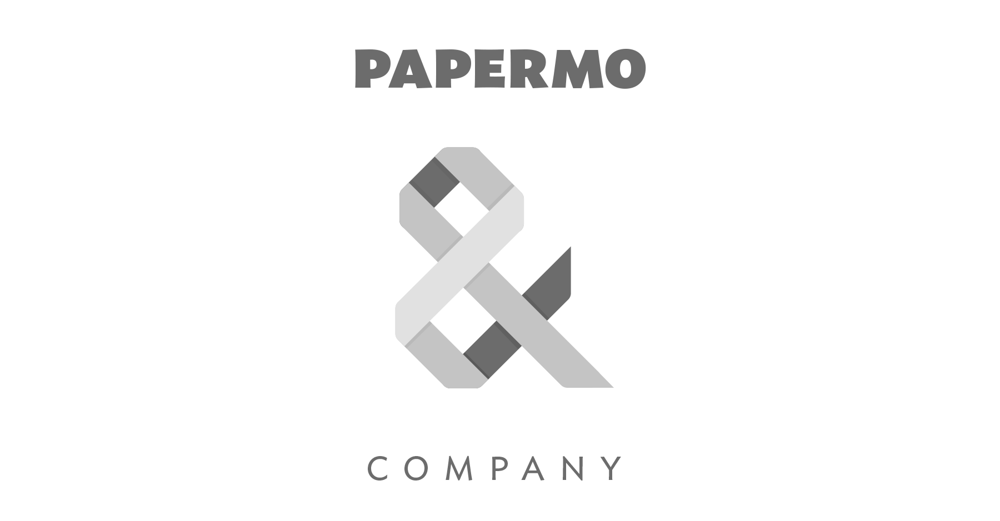
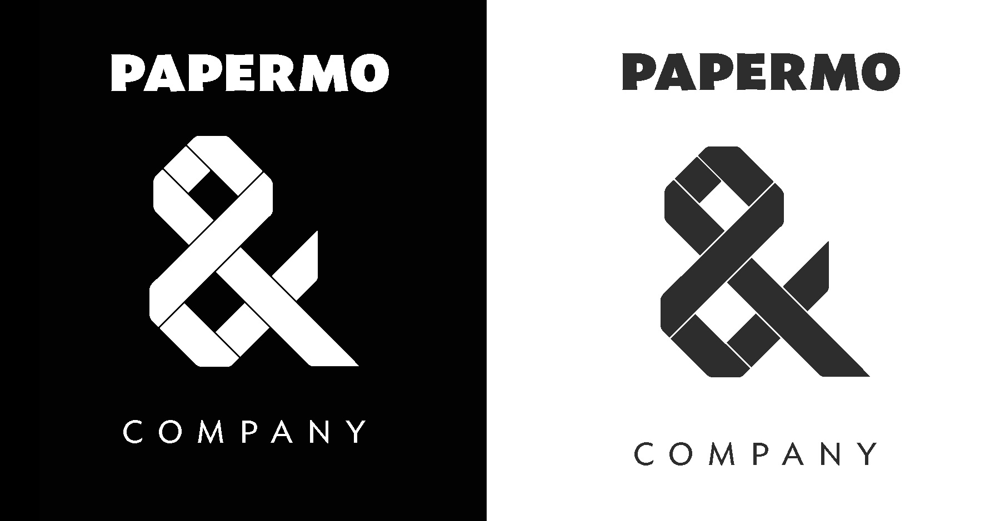